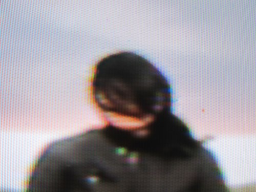

I'm Sorry. Thank You. I Love You.
by Rumi Koshino
June 11 - July 3, 2011
Read a review of Rumi's show by Jen Graves in The Stranger.
Rumi Koshino: Between the Figural and the Factual
an essay by D.W. Burnam
"Thus representation, from mimesis to fiction,
which we have been forced to hate for too long,
escapes from our control, from our condition of life,
instead of having made us its protagonists in alliance
with our environment."
- Gloria Moure
Curiosity threatens equilibrium, whether it's sated or willfully unredeemed. Curiosity calls us to approach one another, our humanity contingent on faint signals in a fog of expectations; to dispatch what we believe to be the history of our species. As individuals we possess but one story that seeks its denouement in the thicket of others' complexities. This tangle of competing universals - to which the edifices of Historical jurisprudence amply contribute and by no means clarify - presents innumerable demarcations that find their reconciliation not through mutual effacement but in articulating the cold fact of where one thing stops and another begins. Relationship continues past this, demanding that these lines hold even when they're breached.
Peering down at Rumi Koshino's Love Letter (2010), I keep getting distracted by my feet. A swath of 36 inch wide, 90-pound bond sheared directly from the roll drapes, just above waist-high, across a staggered pair of skinny sawhorses. The paper's languorous "M" simulates two vast ocean swells as thousands (thousands!) of measured sumi hyphens swarm across its surface in rippling phalanxes. Curious as I am to really get down in there - to sight along one grade with an eye closed - I just cannot keep from monitoring my brazen flirtation with a huge gallery foul: I already hear the resounding pule of my sneaker as it scoots the weightless leg of one of these supports; I cringe at the scenario: my startledoverreaction- two-step concludes with a windmill descent directly - violently - into the center of the sculpture. And there to break my fall is an almost unnoticeable bridge: a pop-out micro-architected in the cleft between the humps with serifed x-acto incisions. The bridge is of course not a structural feature but details like the ribs of the trestles, rendered with childlike diligence, foreground it as a hard edge, perhaps an analogue to the sliver of floor beneath my feet about to betray my faith in its perpendicularity as I half-cantilever myself over the whole business for a better look. Although, perhaps the whole thing's just a picture.
Koshino's work invites and then frustrates my interactive impulse. Full contact interruption, accidental or not, seems practically the only figurative immersion into the world it captures. Love Letter delivers me only partial glimpses into a lyric retelling, a limited contract it enforces with the threat of its damage or collapse. In other of Koshino's works, by a similar tactic, the recursive deployment of nets, taut lines and cages points out a need or desire to restrict access even to clearly accessible parts of the room. These overt and covert focal directives ultimately play off of a collective sense of art-viewing propriety and assert control over the act of reading it.
The quasi-eponymous no-brainer, Nothing Is Concrete (2010) features an approx. six-foot cube constructed by stacking what, in a glance, appear to be cinder blocks but turn out to be paper replicas of cinder blocks. Each little box is deceptively faithful to the real deal in its faux finish, down to the cameos of its characteristic dual orifices, only, of course, renderings of false darkness. The edifice, with a knowing wink, goes back on at least two agreements: solidity and interiority, and so it starts to max out the tensile strength of the cognitive 2D/3D barrier. The flat medium's twofold mimetic device of bodily separation from an event and suspension in perspective, here, carries over into habitable space. Its cover blown, perhaps a little defensive, the bunker now just seems to shit-talk me into proximity with it, testing ego restraint and local air currents. I'm reminded, however, as I close the distance between us, of a repressed love for plain-old artifice. When I find myself in ambiguous spatial arrangements I incline to the embrace of an external force - some means to convey me through a medium for which I have no tools. Things like film and television and bestsellers prescribe a position for me and engineer my response; hardware (camera, frame, page) and narrative syntax (simulated movement in time and space) harness their participant into a virtual field of action. Koshino provides the field for suspension but denies the hardware, or rather. refuses to set it into motion, an intentional oversight that prompts agency and, sometimes, indignation.
Koshino's sculptures tend to antagonize themselves in a similar way, pitting their elements against one another. These oppositions, paired with an ornamental drift into representation, situate the work inside vague narratives that occasionally summon the movement and iconography of picaresque, or the didactic adventure. There's no better example of this treatment of progression than in works such as, One Has to End to Begin, One Has to Begin to End (2009), an extensive bridge system unfurling at the perimeters of the gallery space. Koshino's bridges - other works feature them - prescribe a line that, whether folded and painted paper, painted ceramic or expressionist slashes of ink on the wall, read as idiosyncratically treacherous. They splay open, their moorings ambiguate or vanish altogether and, always, the damn things just don't begin or end any way but abruptly. They're traps; they undermine themselves; they're connections torn by some allegiance to one half of their purpose. But most importantly, they're bridges: like giant waves, and like cages, too, they're literary marks that serve intensely symbolic agendas. Once again I'm torn between the figural and the factual; I approach the well-worn trope in Koshino's work the same way I approach her signified-solid: with a wary eye on its true nature to fall apart.
Despite all this antagonism, inside and out, the thwarting of expectations, the strictures and unspoken provisos and, finally, the repeated invitations to disaster, ultimately, as a viewer, I don't perceive any of it as sabotage - cynical, critical or otherwise. It seems more appropriate to characterize the effort, riffing on one of Gloria Moure's reads on Jannis Kounellis, as an anecdotal sort of "anthropometry," or the study of measurements of the human body. Planting themselves within range of physical discretion, retrofitting a space built for "viewers" that has become generally averse to this very act, Koshino's story-forms mediate an extradiscursive experience of the unconscious tendency to plot line. As I grapple with my own body's spatial invasiveness, I'm reminded by this work that connections and insights aren't preformed - the artist's product rarely heaves into view at the checkout line as the log of linoleum and clattering sheaf of 1x2 hits the conveyor. A relationship is wrested from the teeth of total inarticulateness and fear of extinction; a bond spans a chasm from two ends only to shatter again and again under the abiding, wordless weight of a subjective universality. Koshino's work asks me to test how, and how far I'm willing to breach my historically- and personally-demarcated zones. The silence that follows me in can only make a space for me to pose my own questions to forms that may never answer back.
--------------------------------------------------------------------------------
NEPO Little Treats: Rumi Koshino
I'm Sorry. Thank You. I Love You.
opening Saturday June 11, 2011

I'm Sorry. Thank You. I Love You.
an exhibition by Rumi Koshino
Accompanied by Rumi Koshino: Between the Figural and the Factual
an essay by D.W. Burnam (available at the exhibition)
Please join us for the opening on Saturday June 11th 2011, 6 - 8 pm.
A screening of Stranger Than Paradise film by Jim Jarmusch will follow at 8 pm.
The (n)eponymous culinary treat TBD.
This is our fourth installment in NEPO Little Treats series of exhibitions at NEPO House. Little Treats is a series of monthly shows that focuses on presenting new work by individual artists and small group shows. In order to avoid moving too much furniture the shows take place only and entirely in our entry room.